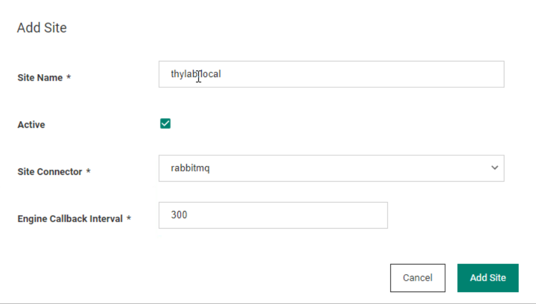
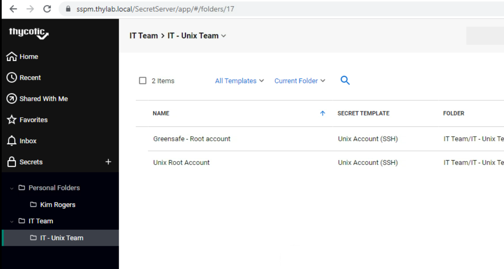
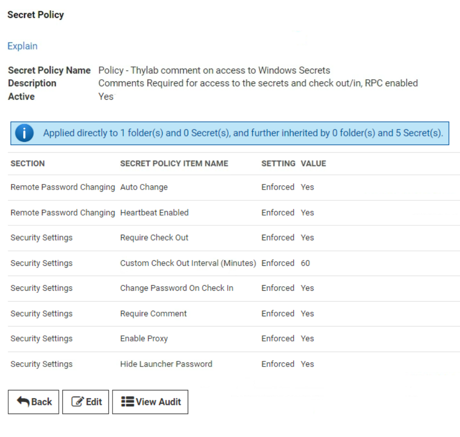
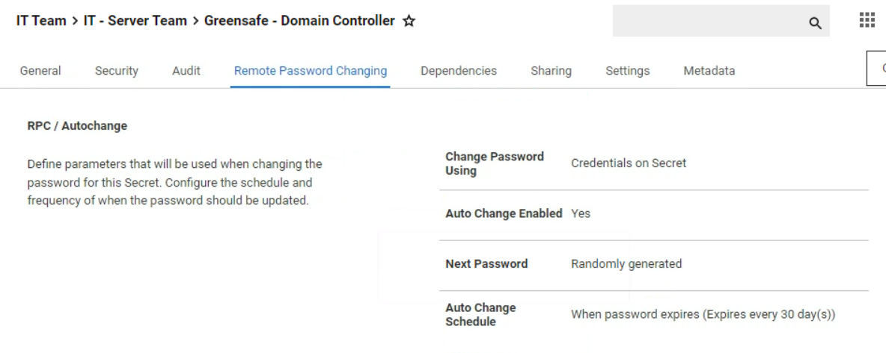
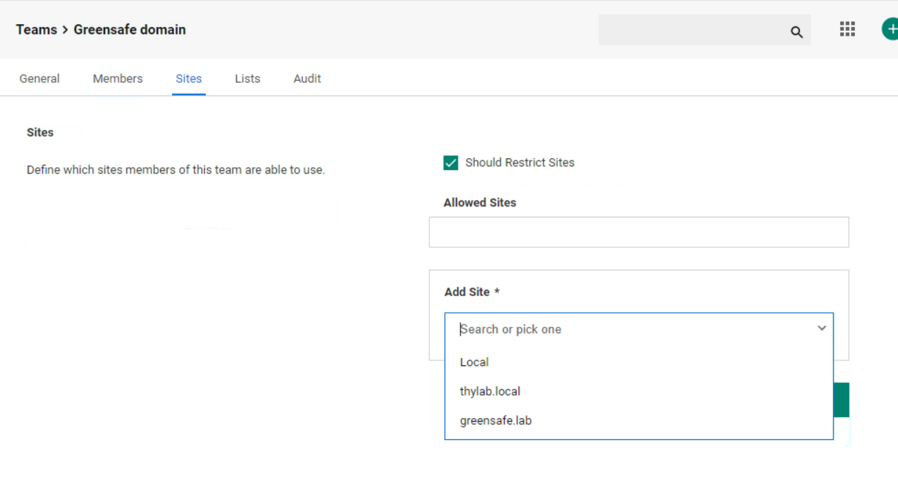
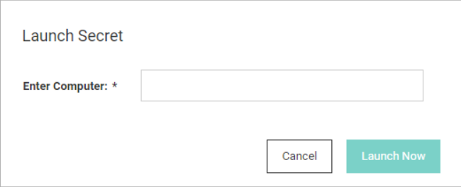
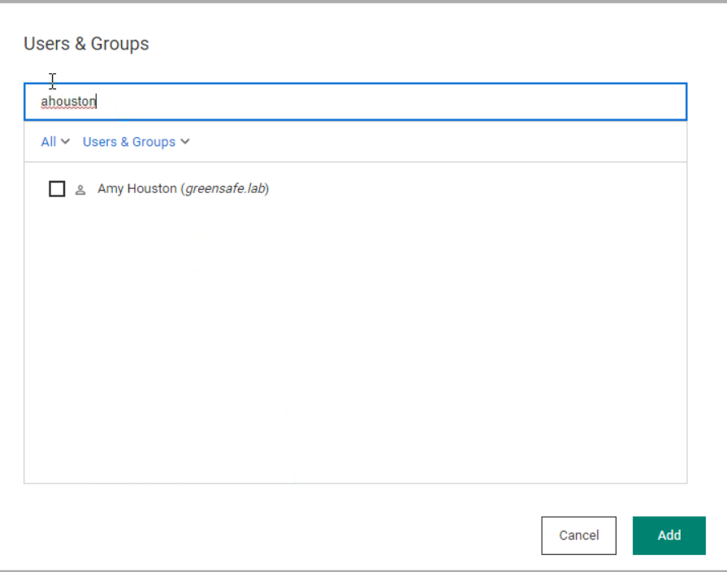
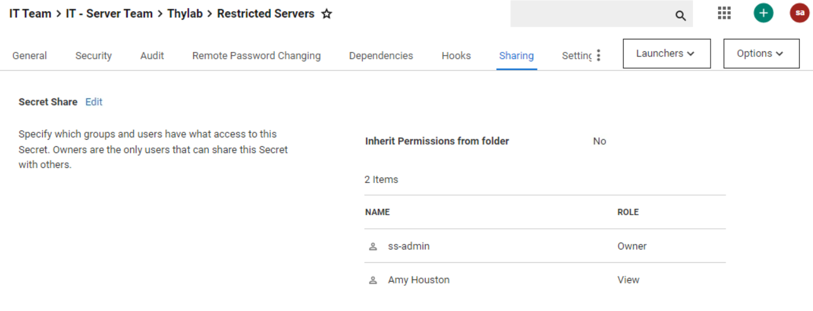

Secret Server advanced Lab¶
This lab will be a sequel to the Secret Server Training Lab where the thylab.local domain has been fully configured.
This lab is emulating a scenario in which an organisation (thylab.local) has merged with a second organisation (greensafe.lab domain) and the administrators for the first organisation need the ability to control the second AD using Secret Server.
This lab will highlight the following topics:
Installing RabbitMQ
Use of Sites
Use of Distributed Engines
Use of Lists
Use of Teams
Use of the combination of Teams and lists
Installation process high level:¶
Configuration for the new Site Connector to be using RabbitMQ
Install RabbitMQ using the RabbitMQ helper
Configuration check on connectivity
Create site and install Distributed Engine in one site
Create Site and install Distributed Engine in second sites
Configure Secret Server for new Site Connector¶
A site Connector is what binds the Secret Server instance with its Distributed Engine(s). The Site Connector is using the message queueing mechanism to make sure jobs and results are exchanged in a modular fashion between the DEs and Secret Server. This also makes it possible to implement Secret Server as a High Availability solution. The support two Message Queueing (MQ) mechanisms are MemoryMQ and Rabbit MQ. The first one is suitable for very small or testing/demo installations. The problem with this MQ is that it runs in the memory of the Secret Server and is therefore limited. It can not be clustered is one of its limitations. The other solution, highly recommended, is using RabbitMQ. This MQ is a dedicated instance that is specially built for the task and seen as one of the popular open source MQ.
Open the SSPM and login as adm-training
Open Secret Server at https://sspm.thylab.lab/SecretServer
Login as ss-admin with the password as provided by the trainer
You will be asked to reset the password. Use you own password as long as you remember it ;)..
Navigate to Admin > Distributed Engine
Click Configure
Use the following settings for the Site Connector
Queue Type: RabbitMQ
Name: rabbitmq
Active: Checked
SSL: Unchecked
Host name: rabbitmq.thylab.local
Port: 5672

Click Save
Installation of RabbitMQ¶
Open the RabbitMQ server and login as adm-training
Open the URL https://updates.thycotic.net/links.ashx?RabbitMqInstaller to download the RabbitMQ Helper
Run the downloaded MSI file
Open Secret Server at https://sspm.thylab.lab/SecretServer (this will log you out of the SSPM Secret Server UI if you refresh that browser on the SSPM server)
Login as ss-admin with the password you set
Navigate to Admin > Distributed Engine
Click Configure
Click View Credentials. Keep this open as it needed in the next steps

Open Windows Explorer
Navigate to %PROGRAMFILES% > Thycotic Software Ltd> RabbitMq Helper and run Thycotic.RabbitMq.Helper.exe
This will open a PowerShell command line
Copy these lines into the PowerShell session:
$cred = Get-Credential -Message "Enter the initial RabbitMq user username and password";
#if you don't want to be prompted you can hardcode your credential in the script
#$password = ConvertTo-SecureString "PlainTextPassword" -AsPlainText -Force
#$cred = New-Object System.Management.Automation.PSCredential ("CustomUserName", $password)
Install-Connector `
-Credential $cred `
-UseThycoticMirror -Verbose
Note This script assumes your environment has an internet connection. If not, please check https://thycotic.github.io/rabbitmq-helper/installation/ for you Scenario.
Hit Enter to execute the lines
The user name and the password are provided by the Secret Server as shown after clicking View Credentials

Copy the username and password in the Messagebox and click OK
When warnings are given on Agree on Licenses, type Y and Enter
This will Download, install and Configure RabbitMQ on the machine. The process takes approx. 5 minutes
The RabbitMQ Management Console should open of RabbitMQ. This means RabbitMQ has been installed and configured. You can close this interface as we don’t need it

Add sites¶
In the Site screens which opens after the Save, name the site thylab.local
Set the Site Connector to rabbitmq
Set the Engine callback Interval to 30 (seconds). This is just for testing/demoing purpose. In production this would be 5 minutes, depending on the organization and the jobs that need to be run in the site.

Click Add Site
Getting the second site ready for Secret Server¶
There is now have site (thylab.local) configured with a DE assigned to it. As the organisation has merged with a second organisation, Greensafe, we now need to configure Secret Server that there is another site that needs to be managed by Secret Server via a DE. This will be done by
Defining another site
Install and assign a DE to the greensafe.lab site
Add site¶
Open the console of the db-server server, login as Alex Foster (afoster) and open the url of the Secret Server and login using the ss-admin account
Navigate to Admin > Distributed Engine
Click Add Site
Name the site greensafe.lab
Set the Site Connector to rabbitmq

Set the Engine callback Interval to 30 (seconds). This is just for testing/demoing purpose. In production this would be 5 minutes, depending on the organization and the jobs that need to be run in the site.
Click Add Site
Install a DE in the second infrastructure¶
Now that the second organisation is added as a site, it needs to be provided with a DE, that way Secret Server can communicate over a limited amount of ports to the Greensafe infrastructure. An other possibility is that the DE will allow us to scan and run Remote Password Changers (RPC) decentralised in the Greensafe Infrastructure.
Navigate to Admin > Distributed Engine
Click Add Engine
Check the Processor Architecture and make sue it says 64-bit
Set the Preconfigured site to greensafe.lab

Click Download Now to download a ZIP file
Open a Windows Explorer and navigate to Downloads
Copy the ZIP file to Downloads and extract it
Extract the ZIP file and run the setup.exe Application

Return to the Secret Server UI and make sure you are at Admin > Distributed Engine
After a few seconds, your deployed engine should be seen in the UI in the Pending Engines section. If the DE isn’t shown, refresh your browser

Open the greensafe.lab site
Hoover over the db-server.greensafe.lab engine and click the three dots on the right

Click Activate and OK
If there is still a warning box next to the greensafe.lab site, refresh your browser
Discovery of the second domain¶
To be able to manage the second infrastructure via the DE, discovery needs to be configured for that domain. After the discovery of Machine, Dependencies and Accounts the next configuration step can take place, defining the correct access rights to the Domain admins of the two different organisations.
Adding secret for AD Sync Greensafe¶
Log out of the db-server
Login to the SSPM sever as adm-training
Open the Secret Server UI and login as ss-admin (as we have been logged out due to the login on the db-server, re-login is needed)
Navigate to Secrets > TSS Service Accounts and add a new secret
Make sure the template to use is Active Directory
Use the following parameters
Secret Name: AD Sync Greensafe
Domain: greensafe.lab
Username: cfyadmin
Password: Centr1fy
Notes: Account used for Discovery Scan Greensafe
Click Create Secret
Configure Directory Service Greensafe¶
Navigate to Admin > Directory Services
Add Domain > Active Directory Domain
Use the following parameters
Fully Qualified Domain Name: greensafe.lab
Friendly name: Greensafe
Synchronization Secret: AD Sync Greensafe
Site: greensafe.lab

Click Validate & Save
In the groups select the following groups:
Domain Admins
Team_Auditors
Team_Contractors
Team_Finance
Team_Helpdesk
Team_IT
Team_Sales
Team_Security
Team_UnixAdmins
Team_UNIXDBA
Team_WindowsDBA
Run Sync Now
Configure and run Discovery Scanner for Greensafe¶
Navigate to Admin > Discovery
Click Create Discovery Source > Active Directory
Use the following parameters
Discovery Source Name: greensafe.lab
Fully Qualified Domain Name: greensafe.lab
Discovery Secret: AD Sync Greensafe
Discovery Site: greensafe.lab
Click Create
In the next step, under Find Dependencies, select all options

Click Save
Navigate back to Admin > Discovery
Click Run Discovery Now > Run Discovery Scan
Wait till the status from Running has switched to Last Run: Just Now

Repeat the same steps, but now Run Computer scan, this will detect local accounts
See the discovered accounts¶
Click Discovery Network View
You should now have two domains being mentioned
Expand both domain and have a look around. Click the tabs (Local Account, Public Keys, Service Accounts and Domain\Cloud Accounts) all should have some info.
This means the Discovery scan has run successfully and Secret Server can now start to control the accounts.
Proxying SSH and RDP¶
To be able to connect to the second organisation Secret Server needs to be configured. There a couple a ways to do this. One is to keep the secrets in the Vault and use them to connect to the servers via RDP or SSH, but this will send the credentials over the network to the server. This means that the machine you are starting the connection from needs to have a direct connection to the server. Another option is to use the DE to proxy the connection towards the server. This will NOT have the machine connect directly to the server, but use the proxy as the endpoint of the connection. This last option is what is the most secure path.
Enabling Proxying¶
Navigate to Admin > Proxying > SSH Proxy tab
Enable SSH Proxy and click Save

Navigate to Admin > Proxying > RDP Proxy tab
Enable RDP Proxy and click Save
The RDP port has been set to 3390 as 3389, is taken by Windows self
Click Edit in the RDP Server Certificate

Click Change
Navigate to Downloads in the popup screen
Select the sspm.thylab.local certificate
Provide the password Thycotic
Click Save
As both orgnisations use self-signed certificates and might use the same computernames, small changes need to be made for RDP to work
Click Edit on Validate Remote Certificates and uncheck it
Click Edit on Allow AD Site Selection and check it
Click the Endpoints tab
Click Edit behind the SSPM machine
Fill the Public HOST IP as 172.31.32.114

Click Save
Under SITE NAME, click the Edit (to the far right) next to thylab.local
Enable SSH and RDP proxy, leave the default ports
Click Save
Repeat the steps for the greensafe.lab site
Both sites should now have RDP and SSH enabled and respectively port 3390 and 22

Test the proxy¶
In this part of the lab we are going to check that we are using the proxy to connect to the server. Firstly SSH and then RDP connections. To connect to the remote machines secrets are needed. Then these secrets can be used to connect the machines using Secret Server and/or the DEs as proxy.
Creating Extra Secrets¶
Navigate to Secrets > IT Team > IT - Unix Admin
Create a secret with the following parameters:
Unix Account (SSH)
Secret name: Greensafe - Root account
Machine: apps-unix.greensafe.lab
Username: root
Password: password1

Click Create Secret
click the Security Tab
See that the Enable proxy is enabled
Navigate to Secrets > IT Team > IT - Server Admin
Create a secret with the following parameters:
Windows Account
Secret name: Greensafe - Domain Controller
Machine: dc-server
Username: Administrator
Password: Centr1fy
Site: greensafe.lab

Click Create Secret
Due to a policy that is running on this folder, comments have to be given. Click Comment and provide some text and click Check Out Secret
Under the Security Tab, make sure the Proxy is enabled, if not, make it so and return to the General tab

Proxied SSH connection¶
Switch to the Client machine and reconnect using the Launcher
When you are logged into the Linux server, a banner has been shown that says === Welcome to the Secret Server SSH Proxy ===
Re run
netstat -a | grep sshyou will see that you have now a connection via the SSPM server and not directLogout from the server using CTRL+D
Proxied RDP connection¶
Navigate to Secrets > IT Team > IT - Server Admin > Greensafe - Domain Controller
Launch the RDP launcher and you should see a connection being made to the Desktop of the dc-server
Open a CMD prompt and type
netstat -a | findstr /c:3389This command shows the RDP session that is established. Only from DB-SERVER (our DE) is shown, not the client machine

Close the session
Secrets manipulation using folders¶
Now that both organisations have been discovered and scanned, it’s time to start organising the secrets and corresponding access rights to secrets. The combined IT Security has been defined as following:
IT Admins from the Thylab domain are allowed to use and see all secrets and use the secrets to access ALL servers AND must comment with checkout why they need access to the Thylab servers. After the session closes, the password needs to be rotated
IT Admins from the Greensafe domain are allowed to ONLY see the secrets of their Legacy environment and use them on their servers and are allowed to retrieve passwords
The UNIX admins are allowed to see ALL unix related secrets and can use them to access ALL Unix related machines but are not allowed to see the passwords
For all users
all sessions (RDP and SSH) MUST run proxied
Define policies¶
To make sure possibilities are enforced upon users, polices can be used. The policies can be set on a per secret bases, or in a more scalable way on folders.
Switch to the SSPM UI
Navigate to Admin > Secret Policies
One policy already exists IT Server Team - Domain Admin Policy, click on the policy to see the settings
Remote Password Changing - Enforced - Enabled
Require Checkout - Default - Enabled
Custom Check Out Interval - Default - 120
Require Comment - Default - Enabled

Click Edit
Change the following for the policy
Name: Policy - Thylab comment on access to windows secrets
Description: Comments Required for access to the secrets and check out/in, RPC enabled
Auto change: Enforced and checked
Heartbeat Enabled: Enforced and checked
Require Check Out: Enforced and checked
Custom check Out Interval: Enforced and 60
Change Password on check In: Enforced and checked
Require Comment: Enforced and checked
Enable proxy: Enforced and checked
Hide Launcher Password: Enforced and checked

Click Save
Click OK
Create a new policy and use the following parameters:
Name: Policy - Proxy all sessions
Description: Policy to use only proxy connections
Enable proxy: Enforced and checked

Click Save
Click Back
Create a new policy and use the following parameters:
Name: Policy - Unix hide password with proxy
Description: Policy for Unix systems to hide passwrod and use the proxy
Enable proxy: Enforced and checked
Hide Launcher Password: Enforced and checked

Configure the new folder structure and policies¶
To be able to assign the correct rights, the folder structure needs to be more hierarchial than it is today. All is now from one organisation’s PoV.
Switch to the SSPM UI
Navigate on the SSPM console in the Secret Server UI to Admin > Secrets
Right-click the IT Team folder and select Edit Folder
Click Edit under Folder permissions
Add Team_UNIX, Team_UNIXDBA, Team_IT and Team_Heldesk
Click Save
Navigate to Secrets > IT Team > IT - Server Team
Right-click the IT - Server Team folder and select Edit Folder
Click Edit next to Secret Policy and select Proxy all sessions
Click Save
Click Edit under Folder permissions
Add Team_IT and Team_Helpdesk
Click Save
Create a folder called Thylab
Select the secrets Checkout Example, RFA Example, Server team - Domain Admin and Click the Move icon

Navigate to IT Team > IT - Server Team > Thylab and click Move Secrets

Click Close after the Bulk Progress is ready

Only one secret should be left in the folder Greensafe - Domain Controller
Right-click the Thylab folder and select Edit Folder
Click Edit next to Secret Policy and select Policy - Thylab comment on access to windows secrets
Click Save
Click Edit under Folder permissions
Uncheck Inherit Permissions
Remove all groups except thylab.local\IT - Server Team and thylab.local\Secret Server Administrators
Click Save

Right-click the IT - Unix Team folder and select Edit Folder
Click Edit next to Secret Policy and select Policy - Unix hide password with proxy
Click Save
Click Edit under Folder permissions
Add Team_UNIX, Team_UNIXDBA, Team_IT and Team_Heldesk
Click Save

Add secret for the Greensafe domain¶
In the same folder where there is only one secret add the following secret
Windows Account
Secret name: Greensafe - DB Server
Machine: db-server
Username: afoster
Password: Centr1fy
Site: greensafe.lab
Click Save
Test the configuration¶
Now that the setup is ready to be used, testing is in order. For this the client machine will be used
Login to the client as adm-training and open the Secret Server UI (https://sspm.thylab.local/SecretServer) if it has been closed.
Logout the current user afoster
Login as user krogers with Centr1fy in the Greensafe domain
Kim Rogers should only see the IT - Unix Team folder and the corresponding secrets
The Password Field will not be shown as set by the policy
Open the security tab
Scroll down and there is no way to uncheck the Enable proxy possibility
Open the PuTTY launcher and see that the proxy banner is shown. That proofs that the connection is made via the SSH proxy
Close the session using CTRL+D
Logout of the Secret Server UI by clicking the initials KR in the upper right corner and select Log Out
Login as LScott with Centr1fy and the Greensafe domain
She only has access to the Greensafe Windows servers and can see the password
Open the security tab and see that the Enable Proxy is enabled and can not be unchecked
Open the Remote Password Changing tab and see that the password will be changed automatically to a random generated password after the expiration of 30 days.

Run the RDP Launcher
Close the RDP session after you see the desktop
Logout of the Secret Server UI by clicking the initials LS in the upper right corner and select Log Out
Login the Secret Server UI as dhughes with Thycotic@2022! and the Thylab domain
This user should have besides the IT - Server Team folder also the Thylab folder

Navigate to the Thylab folder and open Server Team - Domain Admins secret
Due to the policy you have to leave a comment and will check out the secret
Click Comment & Check Out
Click the EYE icon and see the current password as that right is given

Run the RDP Launcher and select any of the two servers you see

Note The dropdown box is due to the Secret Template that is used at the time the secret has been created. We will dive deeper into this later in the lab
Check the Secret back in using Options > Check In
Reopen the Secret and see that the password has been changed

This is also conform the policy that we have defined and assigned to the folder
Teams¶
With Secret Server teams, administrators can create special groups called teams to restrict what users can see. A team bundles users and groups to assign them the same rules as to what other users and sites are visible to them. For example, a managed service provider could isolate their customers from seeing other customer’s user accounts or a large company could “firewall” their users by department. Site visibility can also be restricted by teams.
Create a Team Role¶
In the Secret Server UI, navigate to Admin > Roles
Create a role named Role - Teams Assigned and set these rights:
Add Secret
Allow Access Challenge
Assign Secret Policy
Copy Secret
Delete Secret
Delete Secrets from Reports
Edit Secret
Own Secret
Personal Folders
User Audit Expire Secrets
View About
View Advanced Dashboard
View Advanced Secret Options
View Launcher Password
View Password Requirements
View Secret
View Secret Audit
View Secret Password and Private Key History
Click Save
Create Teams¶
In the Secret Server UI, navigate to Admin > Teams
Click Create Team
Use the following parameters:
Team Name: Greensafe domain
Team Description: Greensafe domain
Click Create Team
Click the Sites tab and click Edit
Check the Should restrict Sites
Under Add Site, select the thylab.local site (the users available in Secret Server)

Click Save
Click Members tab
Add user Joe Bloggs and Dennis Hughes to the team

Click Save
Assigning the Team role to the users¶
Navigate to Admin > Roles
Click Assign Roles
Make sure in the Role field, Role - Teams Assigned has been selected
Click Edit
Move thylab.local\Dennis Hughes and Joe BLoggs from the pane on the right hand side by selecting them and clicking the single left pointing arrow

Click Save Changes
In the Role field, change it to Users
Click Edit
Move thylab.local\Dennis Hughes and Joe Bloggs from the pane on the left hand side by selecting them and clicking the single right pointing arrow

Click Save Changes
Testing the set Teams¶
Switch to the Client machine and logout any user that is active in the Secret Server UI
Log back in as dhughes in the Thylab domain with the password Thycotic@2022!
Navigate to Secrets > IT Team > IT - Server Team > Thylab
Open the Server team - Domain Admin secret
Fill out the Comment (as the policy requires this)
Run the RDP Launcher
Due to the teams restriction (lists that have been assigned and the restriction on the sites) no dropdown box has been given. This means that unless dhughes knows the name of the server, he can not login.

As this is not what is needed, changes are to be made so it is in reverse order. Only allow the servers we want to allow to users in the team.
Change to the existing list¶
Switch back to the SSPM server
Navigate to Admin > Lists
Open the Allowed Domain Servers- Restricted RDP Launcher
Remove DC1 and SSPM by clicking the three dots on the right side of the name and click Delete Option

Add the RabbitMQ server by clicking the Add > Create Option

In the Option Name provide RabbitMQ and click Save

Changing the Secret Template¶
As the existing secrets in the Thylab folder have been set using a specific settings, changes need to be made. The outcome should be that the people in the team, may see the secrets, but are NOT allowed to use them. They are only able use the secret that they have limited access to. These changes are:
Change the current security on all the secrets, to disallow ahouston to access the secrets (this will be done in production using groups)
Change the Secret Template that has been used while the Server team - Domain Admin was created
Create a secret that uses the restricted list for its Launcher
In the Secret Server UI navigate to Secrets > IT Team > IT - Server Team > Thylab
Check the Server Team - Domain Admin and click the three dots

Select Convert Secret Template

Select Active Directory Account, in the next screen leave all. The Allow Servers will be removed

Click Create Secret
Wait till the Bulk Progress is ready and click Close

Click the + sign to create a new Secret
Select Active Directory Account (Restricted Launch)
Use the following parameters for the secret
Secret name: Restricted Servers
Domain: thylab.local
Username: adm_serverteam2
Password: Thycotic@2022!
Notes: Limited Server selection for the user to run the RDP Launcher
Allowed Servers: Allowed Domain Servers - Restricted RDP Launcher

Click Create Secret
Provide a comment and click Check Out Secret
Click the Sharing Tab and remove all but the ss-admin account
Add account AHouston

Give AHouston View/View rights (default)
Click Save

Check the secret back in
Test the account¶
To test the effects of Teams, open the Client machine and log the current user out of the Secret Server UI
Log back is as AHouston in the Greensafe domain with the password Centr1fy
There is only one secret available, the one created earlier Restricted Servers, with no folders
Open the Secret, click Enter Comment and enter some Comment
Click the RDP Launcher
Due to the list and the used Secret Template, the user can only select a server. The possibility of providing a server is not possible

Click Launch Now
After clicking Connect and Yes the RDP session to the RabbitMQ should be shown..
Close the session